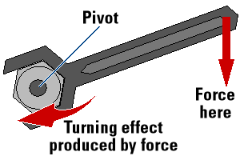
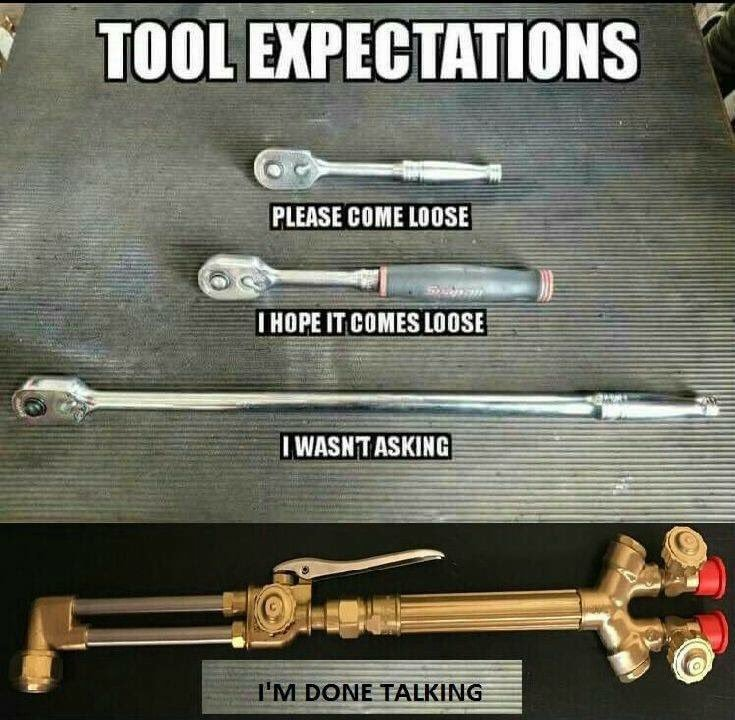
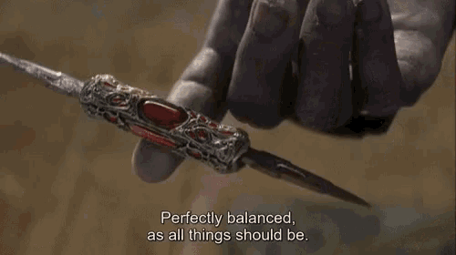
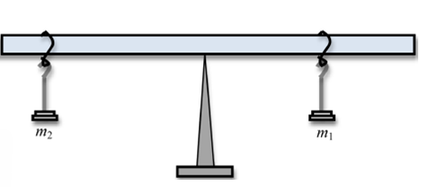
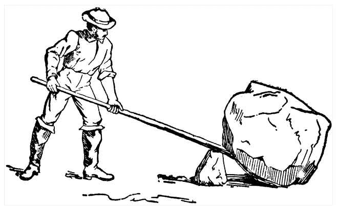
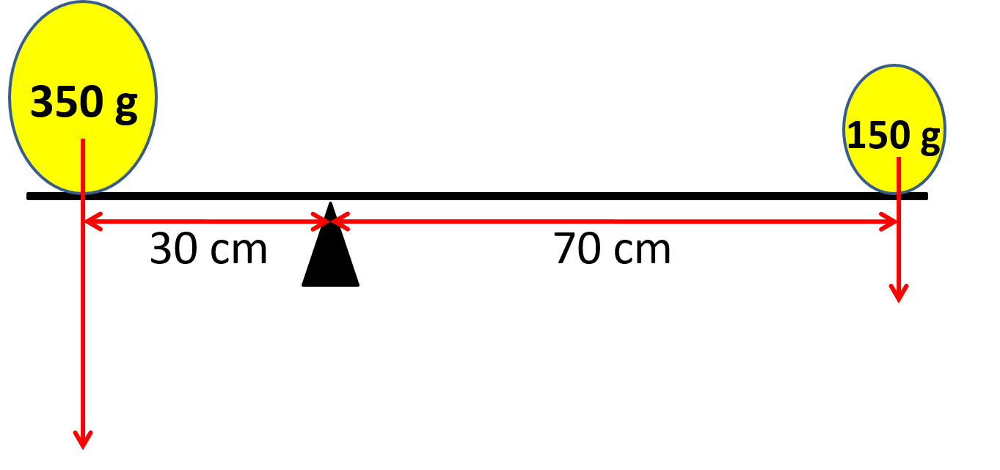
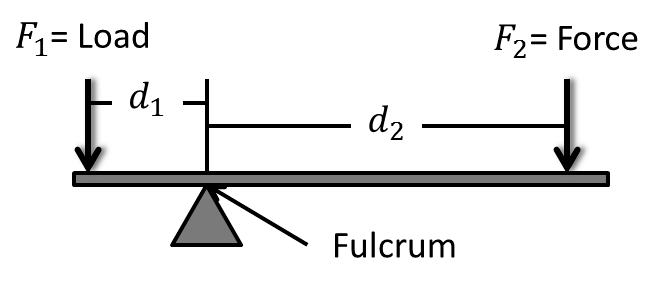

Torque & Equilibrium
12PHYS - Mechanics
Finn LeSueur
2019
Starter
\[\begin{equation} F=ma \end{equation}\]
- State what each letter stands for
- Give the units for each letter
- Rearrange the equation for \(m\) and \(a\)
- Derive the SI units for F (not Newtons)
For a car of mass 1500kg which is accelerating at \(3.7ms^{-2}\):
- What net force is needed to maintain this acceleration?
- If the engine is producing \(6000N\) of thrust, what is the difference and what happened to it?
Torque (\(\tau\))
Torque can be thought of as the turning effect around a pivot. Torque is sometimes known as moment or leverage.
\[\begin{equation} \tau = Fd_{\bot} \\ torque = Newtons \times metres \\ torque = \text{Newton meters (Nm)} \end{equation}\]
\[\begin{equation} F = \text{force in Newtons} \\ d_{\bot} = \text{perpendicular distance of force from pivot} \end{equation}\]
Torque (\(\tau\))
- A small force at a small distance produces a small torque,
- the same small force at a larger distance produces a larger torque.

Question 1
A force of 9N acting up at a distance of 10cm is needed to lift the top off a bottle of soft drink. Calculate the torque applied.
Question 1: Answer
A force of 9N acting up at a distance of 10cm is needed to lift the top off a bottle of soft drink. Calculate the torque applied.
\[\begin{equation} \tau = Fd_{\bot} \\ \tau = 9 \times 0.1 \\ \tau = 0.9 \text{Nm anticlockwise} \\ \end{equation}\]
Question 2
Calculate the torque applied if the lever is stretched to 75cm.
Question 2: Answer
Calculate the torque applied if the lever is stretched to 75cm.
\[\begin{equation} \tau = Fd_{\bot} \\ \tau = 9 \times 0.75 \\ \tau = 6.75 \text{Nm anticlockwise} \\ \end{equation}\]
Question 3
Calculate the torque applied if the lever is compressed to 1cm.
Question 3: Answer
Calculate the torque applied if the lever is compressed to 1cm.
\[\begin{equation} \tau = Fd_{\bot} \\ \tau = 9 \times 0.01 \\ \tau = 0.09 \text{Nm anticlockwise} \\ \end{equation}\]

Question 4: Does torque have a direction?
Yes, and you must always state which direction it is acting in.
Clockwise or Anticlockwise
Torque & Equilibrium

But, What Is Equilibrium?
Newton’s First Law tells us equilibrium is when an object is at rest or moving uniformly.
For this to occur we need two things:
- Sum of all forces to be 0
- Sum of all torques to be 0
Okay, So Where Do We Use It?
Building bridges, setting up scaffolding, see-saws and more!
Question 1

\(m_{1}=2kg\), \(d_{1}=15cm\), \(m_{2}=1kg\), \(d_{2}=30cm\)
- Calculate the clockwise and anticlockwise torques
- Are they in balance?
Question 2
\(m_{1}=7kg\), \(d_{1}=65cm\), \(m_{2}=13kg\), \(d_{2}=35cm\)
- Calculate the clockwise and anticlockwise torques
- Are they in balance?
Question 3

The rock has mass \(1100kg\) and is at distance \(50cm\) from the pivot. If Ash exerts \(70N\) of downward force at a distance of \(8m\) from the pivot can he move the rock?
Archimedes once said: “Give me a place to stand and I will move the world”
Question: Assuming the mass of the Earth is \(5.972\times 10^{24} kg\) at a distance of 1km from the pivot and Archimedes’ mass is \(75kg\), how long would his lever have to be?

Starter

- Calculate the clockwise torque
- Calculate the anticlockwise torque
- Is it balanced?
Torque & Equilibrium
The plank may not be massless. You may need to take it into account.
- The mass of the plank acts through its center of gravity
- Because the plank is uniform, this is the middle of the plank
How To Solve A Torque Problem
- Draw and label all forces on a diagram
- Draw and label the distances between all forces and the pivot
- Calculate all clockwise torque
- Calculate all anticlockwise torque
- Balance torques & forces
Question

\(d_{1}=30cm\), \(d_{2}=70cm\), \(m_{1}=900g\), \(m_{2}=300g\), seesaw mass = \(100g\).
- Calculate the total anticlockwise moment
- Calculate the total clockwise moment
- Is it balanced?